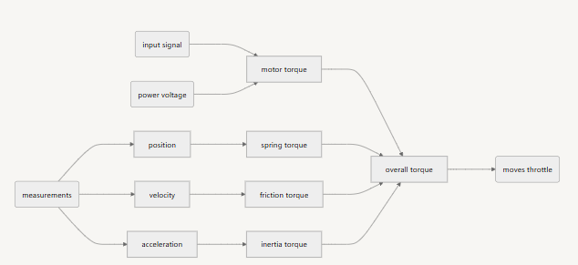
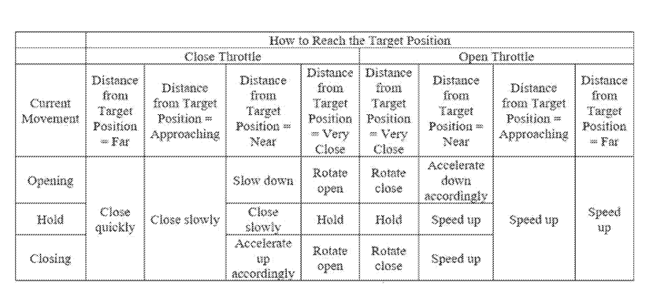
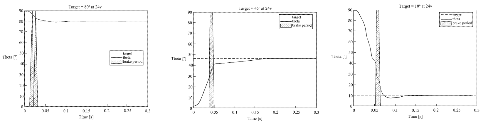

Skills:
Time:
MATLAB Coder, System Simulation, Controls
2023-2024
Many industries utilize throttle valves to regulate the flow of a fluid. One particular application is a fuel cell, which is an electrochemical device that combines hydrogen fuel with oxygen to produce electricity. The flow of the gaseous and/or liquid fluids must be regulated to ensure a chemical reaction occurs that produces the electricity. As such, the ability to accurately and quickly control the fluid flow is desirable. The goal of this project is to increase the accuracy of a throttle valve with only one positional sensor to within 2° and reduce its response time to below 0.2 seconds, whereas most competitors can only aim for accuracy worse than 2° and response times slower than 0.5 seconds. Some challenges in this project include strong nonlinearities in the control system, uncertainties in system parameters, and aggressive requirements for both static and dynamic responses. Furthermore, the robustness of the resulting controller needs to be verified to meet all industrial standards.
Suppose the throttle control system for a vehicle under design includes a controller comprising at least one processor and at least one memory unit. This valve allows electronic communication with the controller to move between multiple positions. The processor is programmed to compare the input target positional signal and the detected position signal, then execute the controller to select an output signal for the throttle valve. To add more detail, the output signal controls the torque responsible for moving the throttle to a position. When the throttle is held in place, it can be assumed that motor torque and load torque are approximately balanced. The controller needs to consider an estimated relationship between the output signal and throttle acceleration so that it can better understand the system.

Kalman Filtering is often used to limit the effect of sensor noises on measurements [1]. For this application, detected position signals suffer from noise caused by electromagnetic interference and heat, which reduces the accuracy and smoothness of velocity. With the help of a Kalman filter, the processor is able to estimate the true state of the throttle, select more reasonable velocity inputs, and make the controller more robust when handling velocity-related logic.
Fuzzy control is a process that mimics human reasoning to map inputs to an output. It involves categorizing input values under different conditions, applying percentage-based logic, and producing a non-crisp (fuzzy) response to a given situation [2]. Note that the motor used in a throttle system exhibits high nonlinearity and damping, meaning the throttle will move differently when output signals are the same but initial positions differ. Therefore, fuzzy rules need to account for varying conditions across different combinations of acceleration, velocity, and position.

The processor is programmed to apply a first-stage fuzzy control acceleration based on the output signal to the throttle valve, moving it toward the target position. Then, a second stage applies brake deceleration to slow the throttle valve as it approaches the target. Finally, the controller applies a second-stage fuzzy control acceleration to re-accelerate the throttle valve toward the target position.
As a result of the proposed control strategy, the throttle system is able to reach the target valve position with an accuracy of 1° and a response time of 0.15 seconds under typical operating conditions. These results were verified through a series of repeated experiments conducted in accordance with automotive industry standards. Additionally, the system demonstrated strong repeatability and robustness. Performance remained reliable when subjected to parameter uncertainties and sensor noise due to vibration, shock, electromagnetic interference, and temperature variations. Compared to throttle systems that typically require multiple sensors or a more complex hardware design, the proposed setup, with only one positional sensor, achieves comparable performance. This demonstrates that high accuracy and fast response time can be accomplished using a low-cost throttle control system for automotive fuel cell applications.

[1] Haugen, Finn. "State estimation with Kalman Filter." Kompendium
for Kyb. 2 ved Høgskolen i Oslo, published online prior to Aug. 10,
2017. Accessed Jun. 20, 2023. http://techteach.no/fag/seky3322/
0708/kalmanfilter/kalmanfilter.pdf (Year: 2017).
[2] The MathWorks, Inc. “What Is Fuzzy Logic?” mathworks.com. Accessed: Jun. 20, 2023. [Online]. Available: https://www.mathworks.com/help/fuzzy/what-is-fuzzy-logic.html.